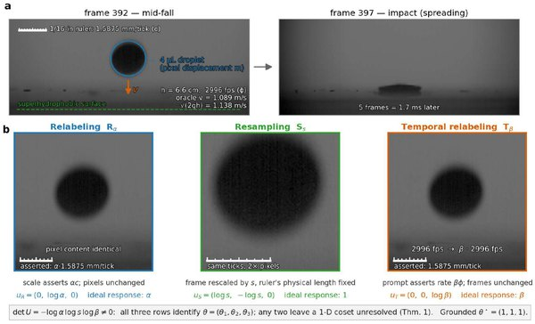

One Perturbation Is Not Enough: Identifiability and Blind Baselines for Behavioral AI Evaluation

In one sentence. Proves how many independent perturbations a behavioral evaluation needs to certify that a model uses an input, derives the score a blind policy would receive, and finds that three vision-language models reading physical quantities from video score below their own blind bound.
Abstract
Behavioral evaluations perturb an input and read the induced change in the output in order to certify that a system uses that input. We show that the number of perturbations such a certificate requires is fixed, and that reporting a single perturbation cannot supply it. Where a response ratio is a property of the policy rather than of the test items, the behavioral record is a linear measurement of an exponent vector recording how much the output depends on each input, so perturbations identify input use exactly when their logarithms span the input space. At least n are needed for n inputs, an incomplete design confuses precisely the policies differing along the kernel of its design matrix, and sharpening a perturbation never substitutes for adding an independent one. We also derive in closed form the score such a test awards a policy that reads nothing, which is far from zero and which none of the probes we survey reports. Instantiating this where the correct response is fixed by dimensional analysis, we run a complete identifying set of three perturbations on three vision–language models reporting a physical quantity from video. All three score far below their own blind bound rather than above it, because each defaults to one of a small set of round calibration values that never matches what the scale asserts; none moves its relabeling response by a single exponent, and none is separable from the same model instructed to ignore the video.
BibTeX
@article{khanbayov2026one,
title = {One Perturbation Is Not Enough: Identifiability and Blind Baselines for Behavioral AI Evaluation},
author = {Khanbayov, Rasul and Sohail, Mariam and Abdala, Ahmed and Kurban, Hasan},
journal = {arXiv preprint arXiv:2609.06190},
year = {2026}
}